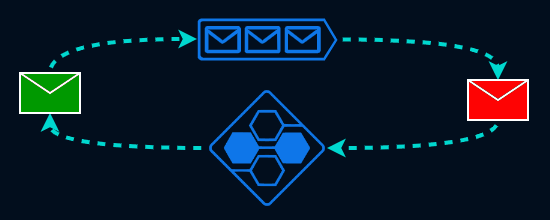
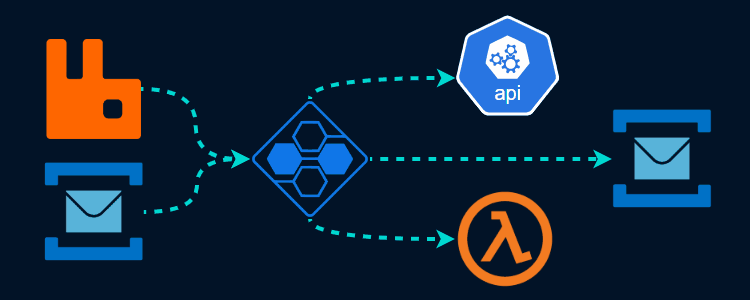
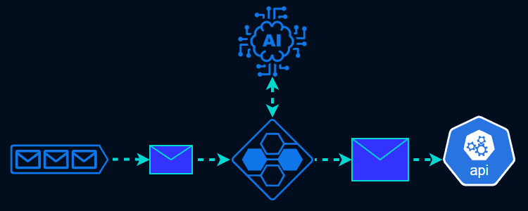

Simple
You can control your message processing with a unified configuration.
Developer Friendly
Full control by our CLI called siloctl. Manage your connections in YAML files.
Free
Run inside your environment with Docker.
Try it now!
Correct your dead-lettered messages
You can define a custom JavaScript function that is called for every dead-lettered message. Transform the message and re-enqueue it automatically!
Simplifies integration between systems
Should you channel the messages from your message broker to a 3rd party app? Or does the other system use a completely different message broker solution? No problem! Configure some Message Silo connections and you're done. ;)
Enrich your messages with the power of AI
Bring your OpenAI subscription or AI endpoint, Message Silo do the rest!
